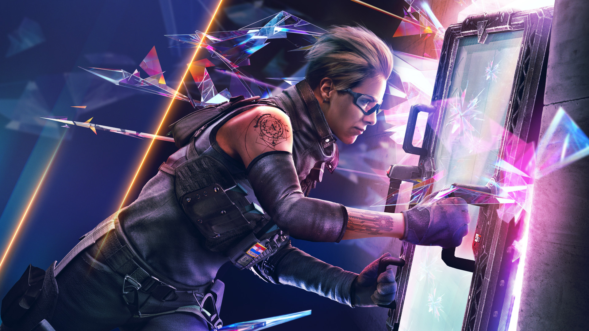
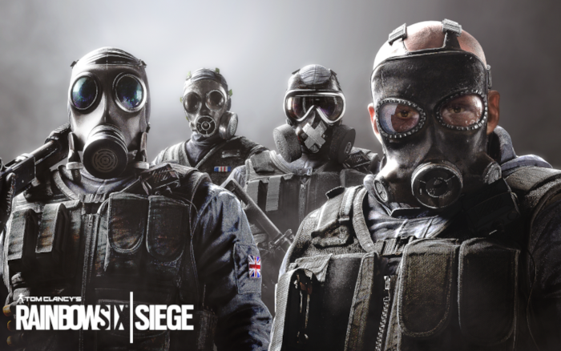
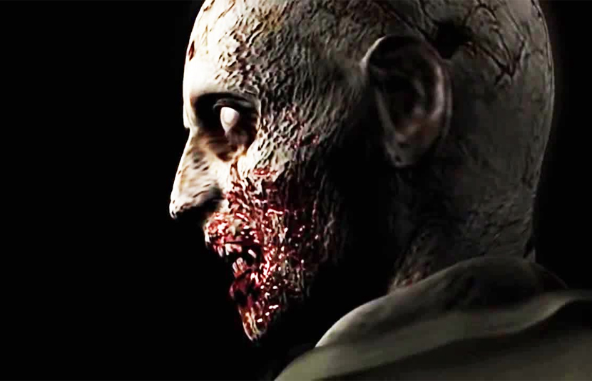
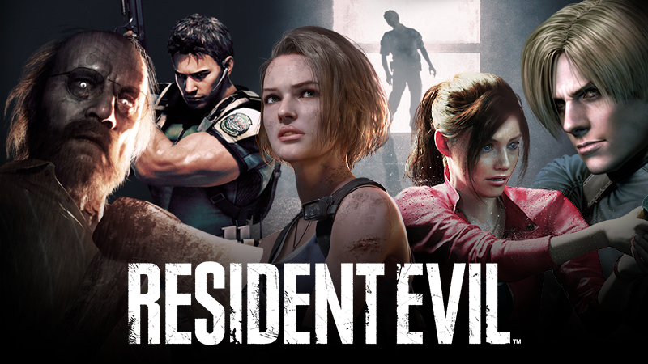
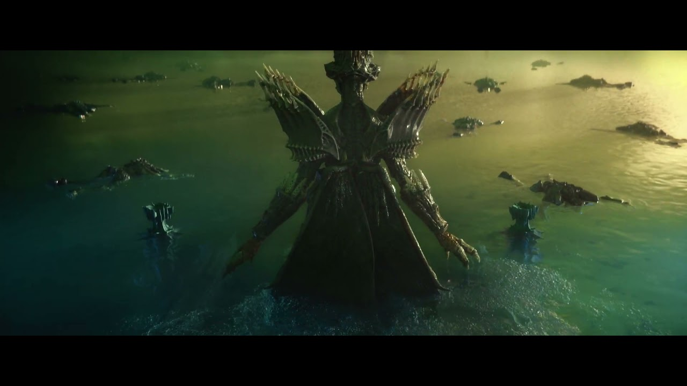
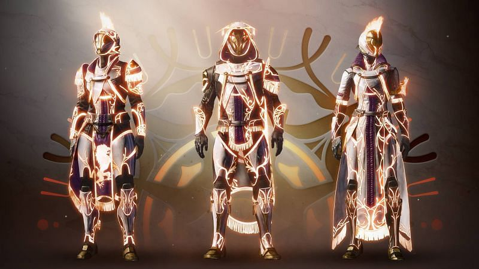
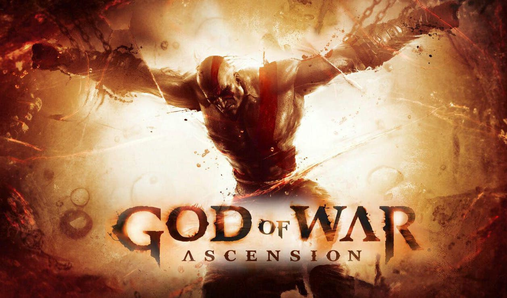
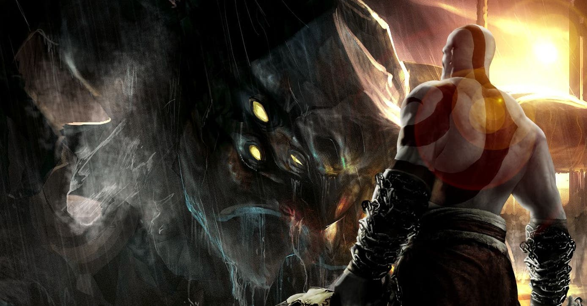
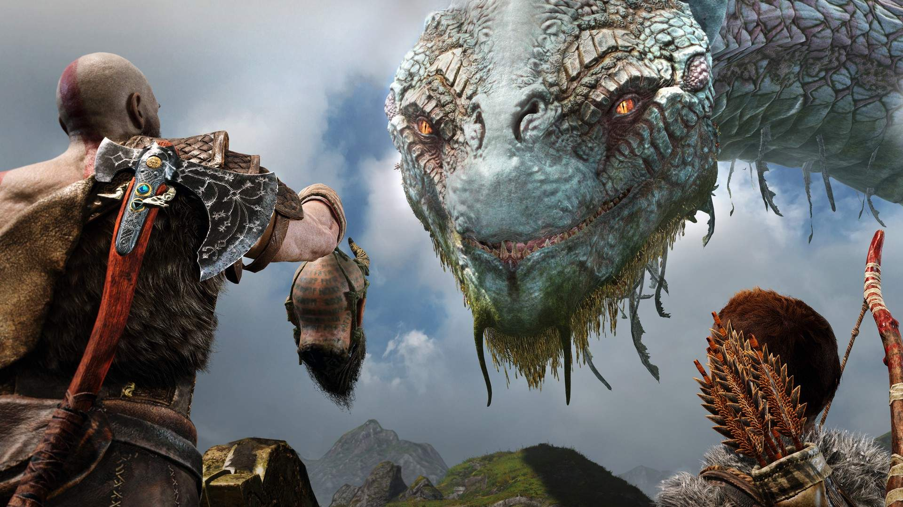

GUARDA DE CRISTAL
Autor: Santiago “Flores” Lucero
05.09.2021
O novo operador croata Osa, o gênio da tecnologia de Nighthaven, traz novos escudos transparentes implantáveis no ataque para reinventar o campo de batalha: o Talon-8 Clear Shields. O Crystal Guard também está trazendo algumas mudanças para o pool de mapas competitivo com pequenos retrabalhos em Bank, Coastline e Club House.” “Capitana, Não há muito que possa fazer sobre os planos de Kali pelos canais que você me deu, mas achei que você gostaria de saber sobre um grande jogador que já está em campo. A tecnologia da Nighthaven sempre foi sua ponta, e eles têm uma pessoa a quem agradecer por isso. Anja “Osa” Janković, formada em eletromecânica, engenharia militar e gênio em robótica.
Recrutado para Nighthaven logo após a universidade, fundou seu departamento de P&D chamado “Quantum Concepts & Robotics”, treinado em operações de campo pela própria Kali. A patroa não a menciona muito, então pedi a Ace para falar. Segundo ele, Kali e Osa contam tudo um para o outro. Kali é muito protetora com ela, e não apenas porque ela é sua “galinha dos ovos de ouro”. Melhores amigos, parceiros de negócios, como você quiser descrever. Há muita coisa lá que Harry poderia descobrir.
Eu olhei para a tecnologia que nossos especialistas em Nighthaven usam, e todos eles compartilham uma assinatura - mesmo após as modificações, posso dizer que esses são os protótipos de Osa. Ela provavelmente fez aquele equipamento que Kali tirou no Invitational, o traje de que você me falou. Agora que ela é uma capitã de equipe, não estou surpreso que Kali traga um de seus próprios membros. Estou surpreso que Osa seja o único, no entanto. Ela tem as habilidades e a experiência, mas pensei que alguém como Kali manteria um ativo como ela longe da linha de fogo.

Falando nisso, o dispositivo que ela está trazendo com certeza joga nas linhas de fogo. Um escudo transparente com garras mecânicas que se cravam em superfícies e armações? Suas capacidades defensivas projetadas para missões ofensivas podem deixar Mira com ciúme por não ter pensado nisso primeiro. Ainda assim, não estou vendo nada ainda que sugira que Nighthaven seja um problema. Talvez você tenha julgado mal, Ash. Talvez Kali seja apenas mais humana do que você esperava. Talvez ela simplesmente não siga as regras e você não saiba o que fazer com isso. Verifique com Harry após sua avaliação. Vou continuar cavando.
!!!VEJA ABAIXO A GAMEPLAY DA SEMANA!!!
25 ANOS DE RESIDENT EVIL!
Autor: Ricardo Andretto
23.03.2020
Lançado no já longínquo ano de 1996, Resident Evil 1 até hoje é considerado um dos melhores games para o PSOne, e figura na maioria das listas dos melhores games da história. Erroneamente, a ele é dado o crédito de criador do gênero survival horror, um estilo de game que já havia sido introduzido anos antes, com Alone In The Dark e Sweet Home.
A história do game se passa em 1998, quando crimes bizarros começam a assolar a pequena Raccoon City. As vítimas, normalmente andarilhos e excursionistas que passam pela floresta nos arredores da cidade, são brutalmente assassinadas e seus corpos apresentam sinais de canibalismo e violência extrema.
O departamento de polícia de Raccoon decide enviar seu time de elite, os S.T.A.R.S. (Special Tactics and Rescue Service, Serviço de Táticas Especiais e de Resgate) para cuidar do caso. A primeira equipe enviada é a Bravo, que perdeu contato com a delegacia minutos após entrar na área da floresta. Após 24 horas sem contato via rádio, a equipe Alpha é enviada, e se surpreendem ao encontrar o helicóptero da outra equipe completamente abandonado.
Enquanto checavam os arredores em busca de pistas sobre a localização dos policiais desaparecidos, Joseph Frost, um dos membros da equipe Alpha, é atacado por cães selvagens, que aparentam estado de decomposição avançada. Abandonados por Brad Vickers, piloto da equipe, que foge levando o helicóptero, os oficiais sobreviventes se vêem sem opção a não ser se refugiar em uma mansão que é avistada ao longe. É aqui que o game começa. Você assume o papel de Chris Redfield ou Jill Valentine, e deve investigar a misteriosa casa, ao mesmo tempo em que procura por seus companheiros e tenta sobreviver à horda de criaturas que infesta o local, desde humanos transformados em zumbis até criaturas mais fortes e letais.
O game também tem versões para Sega Saturn, computadores e Nintendo DS, além de uma nova edição para o PSOne, chamada de “Resident Evil Director’s Cut”, que traz muitas diferenças em relação à versão original, entre elas novas roupas e um maior nível de dificuldade. O game recebeu um aclamado Remake para o GameCube em 2002.
DESTINY 2: A BRUXA-RAINHA CHEGA EM FEVEREIRO DE 2022
Autor: Igor Juliao menezes
01.09.2021
Os detalhes do próximo capítulo da história de Destiny 2 finalmente foram revelados pela Bungie, nesta terça-feira (24). Com lançamento previsto para 22 de fevereiro de 2022, a expansão A Bruxa-Rainha vai chegar ao shooter cooperativo com uma das funções mais pedidas pelos fãs: criação de armas. Até lá, os jogadores podem aproveitar os conteúdos da season 15, Temporada dos Perdidos, que começa hoje.
No enredo de A Bruxa-Rainha, o foco será em Savathûn, a divindade da Colmeia que representa astúcia e malandragem. Irmã de Oryx — antagonista da expansão O Rei dos Possuídos, do primeiro Destiny — e tia de Crota, a deusa ainda não teve suas motivações detalhadas, mas ela tem tudo para ser uma das personagens mais perigosas e icônicas da série até hoje. Para encontrar e derrotar Savathûn, os Guardiões vão explorar um planeta inédito criado pela própria bruxa. Lá, os jogadores também irão desvendar os mistérios por trás da relação entre Luz e Trevas — que tem sido o maior enigma da franquia desde o primeiro título. Entre as novas mecânicas, a expansão vai enfim incluir um sistema de criação de armas, fortalecendo ainda mais o lado MMORPG de Destiny 2. Ainda sem muitos detalhes revelados, o sistema deve permitir aos jogadores não só construírem seus armamentos, como também aprimorá-los durante a aventura.
A Bruxa-Rainha também vai trazer as Glaives, um novo tipo de arma de Energia com combos que poderão ser usados tanto em combates corpo a corpo quanto à distância. No decorrer do ano que vem, Destiny 2 irá receber duas novas masmorras e mais uma opção de dificuldade, que vai escalar de acordo com o tamanho do esquadrão. Anunciada no meio do ano passado, A Bruxa-Rainha é um dos conteúdos mais aguardados de Destiny 2 desde então. Como a expansão foi adiada de 2021 para 2022, é possível que a próxima grande atualização — Lightfall, que estava marcada para ser lançada em 2022 — chegue apenas em 2023.
A Bruxa-Rainha vai chegar de forma simultânea para PC, PS4, PS5, Xbox One, Xbox Series X|S e Stadia em 22 de fevereiro de 2022. Todas as versões terão suporte a cross-play e cross-save desde o primeiro dia.
A HISTORIA DE GOD OF WAR
Autor: Renata alves lima
18.03.2021
Assinatura de acordo com Ares.
Kratos é o protagonista de God of War , um feroz guerreiro espartano que, por sua vez, é filho de Zeus e Calisto, o que lhe confere o status de semideus. A verdadeira história do personagem, por outro lado, começa quando ele faz um trato com Ares, o deus grego da guerra: se ele concordar em destruir seus inimigos, Kratos oferecerá sua vida como servo. Ares, logicamente, aceita a possibilidade de conseguir mais um capanga. Embora o negócio pareça correto, ele acaba tendo repercussões letais para a família de Kratos: Ares o engana durante uma de suas missões e Kratos acidentalmente acaba com sua esposa e filha . É neste ponto que o semideus tenta se livrar de seu acordo com Ares, em vista das consequências negativas que isso teve para ele. No entanto, ele acaba sendo capturado pelas Três Fúrias no processo. Em seu fracasso, Kratos é afetado por uma amnésia induzida por Fúria que o faz perder toda a sede de sangue e até mesmo a identidade.
- God of War: representa o início da jornada de Kratos
- God of War - Ascension: Durante esta fase Kratos conhece Orks - filho de Ares e da Rainha das Fúrias -, que pretende ajudá-lo a restaurar sua mente. Graças à sua ajuda, sabe que deve acabar com as Fúrias para recuperar a sua memória, missão que empreende sem hesitação. Infelizmente, a vítima final no processo deve ser ninguém menos que Orks, e no momento em que ele o mata, Kratos recupera suas memórias ... começando com a dura realidade de quando ele assassinou sua família . Depois disso, Kratos decide que prefere apagar essas memórias, algo que pretende fazer a serviço de Atenas.
- God of War - Chains of Olympus: Kratos fica assim com a missão de parar Perséfone, que pretende destruir o Pilar do Mundo para não ter que viver no submundo. No processo, Kratos viaja para o submundo, onde se reúne com sua filha Calliope, a quem ele deve mais uma vez deixar para trás a fim de completar sua missão. Ao terminar com Perséfone, Kratos se refere mais uma vez ao serviço deles aos deuses ... algo do qual acaba se cansando após cerca de 10 anos de atividade.
- God of War - II: Kratos confronta Athena sobre como ele ainda não o livrou de suas memórias, que são pesadelos constantes. Isso, então, dá a ele uma missão final: matar Ares, que começou a atacar as cidades da Grécia. Ao tentar usar a Caixa de Pandora para acabar com Ares, Kratos é morto pelo próprio Deus da Guerra, que acaba enviando-o para o submundo como resultado de sua morte .
O novo deus da guerra
No entanto, neste ponto Kratos mostra que nem mesmo a morte pode detê-lo, pois ele escapa do submundo e usa o poder que está na caixa de Pandora para, agora, poder enfrentar Ares e acabar com ele . Apesar de cumprir sua missão, Atena não faz o mesmo com sua promessa, então, em vez de livrá-lo das pesadas lembranças do assassinato de sua família, a deusa concede a Kratos a honra de se tornar o novo Deus da Guerra.
- God of War: Ghost of Sparta - Em seguida, Kratos decide ir em busca de seu irmão Deimos , que havia sido preso por Ares para evitar a suposta profecia da destruição do Olimpo. Kratos enfrenta neste processo o deus da morte a quem ele consegue espancar, embora quando ele está prestes a resgatar seu irmão Deimos, Thanatos aparece para tirar sua vida. Depois de perder sua última reivindicação a uma família mortal, Kratos rejeita a transição completa de Atena para deus para garantir que 'Os Deuses pagarão por isso'.
- God of War III - Agora um deus pleno, Kratos começa a exercer suas funções como 'God of War' . No entanto, devido à sua destruição constante, Atena cria um plano para enganá-lo e acabar com ele: convocar um colosso que ele só pode destruir com uma espada para infundir seu poder divino. Kratos consegue acabar com o colosso, mas no processo ele perde seu status de deus, algo de que Zeus se aproveita para matá-lo e enviá-lo (novamente) para o submundo.
Guerra aberta contra o Olimpo

Esperado, Kratos consegue deixar o submundo e define um novo objetivo claro: assassinar Zeus e qualquer um que queira pará-lo . Os primeiros passos de Kratos neste objetivo passam por duas fases distintas, a primeira sendo aliar-se a Gaia e a segunda terminando com as Irmãs do Destino. Depois de conseguir tudo isso, resta apenas o processo de eliminação de Zeus. Quando Kratos está prestes a destruir o deus dos deuses, Atena se joga em seu caminho, sacrificando-se e alegando que sem Zeus o Olimpo deixaria de existir. Embora seja aqui que Kratos descobre que Zeus é seu verdadeiro pai, o que ele faz é juntar-se a uma série de titãs para poder lançar um ataque final e, assim, destruir Zeus e tudo o que sua figura representa. God of War IV narra o ataque final de Kratos ao Monte Olimpo.
A primeira tentativa, no entanto, não foi totalmente bem-sucedida para Kratos; Embora ele consiga acabar com Poseidon, ele cai em sua luta contra Zeus e mais uma vez se encontra no submundo . Isso, como esperado, acaba não sendo um problema real para Kratos, que antes de retornar ao mundo dos vivos acaba com Hades para remover outro deus do Olimpo do caminho. Após isso, Kratos sai em busca da Caixa de Pandora mais uma vez, aniquilando todos os deuses gregos que cruzam seu caminho, até que ele cumpra seu objetivo com a ajuda da própria Pandora, necessária para acessar a caixa. Sin embargo, en el momento de abrir la caja Kratos descubre que está vacía , y es que en su primer uso de la misma desató todo los males, incluido el miedo que acabó llevando a los dioses del Olimpo a acabar con él y su estatus como Deus da guerra. Felizmente para Kratos, Atena manteve o poder da esperança na Caixa de Pandora , permitindo-lhe destruir Zeus para sempre.
É neste ponto que o fantasma de Atenas aparece para tentar recuperar o que resta do poder da esperança, que ela usará para reconstruir a humanidade com ela como sua líder. Kratos, por outro lado, opta por se cruzar com a espada infundada com a força da esperança, que permite que essa energia seja liberada para que fique apenas disponível para a humanidade.
O renascimento de Kratos
God of War (2018) - Com uma tremenda ferida no estômago, parece que a vida de Kratos definitivamente chegou ao fim desta vez ... embora ele sobreviva. Kratos reaparece vários anos depois, com uma barba enorme e um filho chamado Atreus . Agora, sua nova missão consiste em espalhar as cinzas de sua nova esposa Faye - embora também falecida -, que queria que isso fosse feito do ponto mais alto dos Nove Reinos.
Antes de iniciar sua jornada, Kratos é atacado por um misterioso indivíduo que parece não sofrer nenhum dano, apesar de acabar derrotando-o e partindo com Atreus. Em sua jornada, eles fazem vários aliados, como os anões Brok e Sindri, 'A Bruxa da Floresta' e a serpente do mundo, Jörmundgander. Assim, eles usam a ajuda da bruxa da floresta para obter a luz de Alfheim, a única coisa que lhes permitirá continuar seu caminho depois de encontrar uma névoa estranha.
God of War 2018 marca o renascimento do personagem na franquia
Depois disso, Kratos e Atreus encontram Mimir, que revela que o indivíduo que o atacou no início era Baldur, filho de Odin , e também que o pico mais alto dos Nove Reinos fica em Jötunheim, local bloqueado por Odin e Thor. Novamente com a ajuda da Bruxa da Floresta, revelada como Freya, Kratos parte para Helheim para levar o coração de um troll para ajudá-lo a curar Atreus, que adoeceu devido ao seu status de deus - origens ocultas por Kratos.
Quando eles alcançam o pico mais alto em Midgard, Baldur cruza seu caminho novamente, que termina com a destruição do portal de Jötunheim e a queda do pai e filho para Helheim . Ao procurar uma nova maneira de acessar a região, eles são atacados novamente por Baldur, que se descobre ser filho de Freya e que possui uma invulnerabilidade derivada da magia de Freya. No entanto, Baldur acaba caindo em combate depois que uma das flechas de Atreus consegue quebrar o feitiço. Com essa situação, Freya jura vingança pela morte de seu filho. Finalmente, Kratos e Atreus chegam em Jötunheim , espalham as cinzas de Faye, que se revela ser um gigante em suas origens - o que dá a Atreus uma curiosa combinação de sangue . Por fim, Mimir avisa que o Ragnarök parece estar próximo, e Atreus sonha com uma visão de Thor.